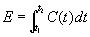

CONTAM provides you with the ability to simulate the existence of occupants within a building. You can simulate the movement of occupants throughout the building, allow the occupant to leave the building, and determine the contaminant exposure of each occupant. Occupants can also generate contaminants within a building, so you can represent a contaminant source that moves through the building using an occupant.
Occupant exposure is determined by integrating the contaminant concentration to which the occupant is exposed over a period of time.

CONTAM presents results in terms of E/Dt. Where Dt is the user-defined output time step established for a transient simulation (See Results Files in the Working with Results section). From these results you can calculate a dosage as desired.
To implement an occupant, you must first define at least one species. You then place an exposure icon (shown below) on the SketchPad. Once you place the exposure icon on the SketchPad, you can define its characteristics, move, copy, and delete it. You must then define an occupant schedule for the exposure icon. The details of drawing, defining and modifying occupants are described in the following sections.
| Occupant exposure icon |